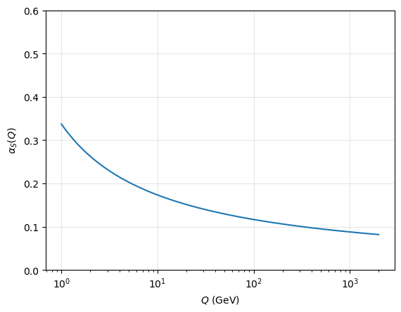
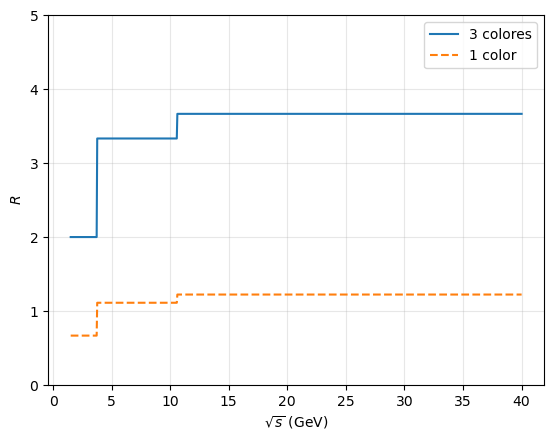

Quarks y hadrones: el color que no se ve#
# Configuración: el código auxiliar está en el paquete notebooks/fnyp/
try:
import fnyp
except ModuleNotFoundError: # en Google Colab hay que traerse antes el repositorio
!git clone -q https://github.com/jahernando/USC-FNyP.git
import sys; sys.path.append('USC-FNyP/notebooks')
from fnyp.inicio import *
Last version Thu Oct 8 13:39:19 2026
Objetivos#
El tema tiene cuatro partes:
Los hadrones y los quarks. Bariones y mesones, los seis quarks y el color. Y una pregunta sencilla con una respuesta sorprendente: ¿qué es un protón?
La interacción fuerte. Confinamiento, hadronización y libertad asintótica: una fuerza que crece con la distancia.
Las pruebas. Los neutrinos ven los quarks dentro del nucleón; la aniquilación \(e^+ + e \to q + \bar{q}\) mide su espín y cuenta los colores.
Las desintegraciones débiles de los hadrones. El \(W\) mezcla las familias de quarks: el ángulo de Cabibbo y la matriz CKM.
1. Los hadrones y los quarks#
1.1. Bariones y mesones#
Los hadrones son las partículas que sienten la interacción fuerte. Están hechos de quarks y son de dos tipos:
bariones: tres quarks, \(qqq\), con número bariónico \(B = 1\) (los antibariones, \(\bar{q}\bar{q}\bar{q}\), \(B = -1\));
mesones: un quark y un antiquark, \(q\bar{q}\), con \(B = 0\).
En los dos casos la carga es entera. Se conocen cientos de hadrones [PDG], y todos son inestables salvo el protón: \(\tau_p > 3.6 \cdot 10^{29}\) años, sea cual sea el canal, y \(\tau_p > 2.4 \cdot 10^{34}\) años para \(p \to e^+ + \pi^0\) (Super-Kamiokande, el boletín de inicio). [SKp]
Algunos bariones relevantes [PDG]:
nombre |
quarks |
\(J^{P}\) |
masa (MeV) |
vida media o anchura |
desintegraciones principales |
|---|---|---|---|---|---|
\(p\) |
\(uud\) |
\(1/2^+\) |
\(938.27\) |
\(> 3.6 \cdot 10^{29}\) años |
estable |
\(n\) |
\(udd\) |
\(1/2^+\) |
\(939.57\) |
\(878.4 \pm 0.5\) s |
\(p + e + \bar{\nu}_e\) (\(100\,\%\)) |
\(\Delta^{++}\) |
\(uuu\) |
\(3/2^+\) |
\(1232\) |
\(\Gamma \simeq 117\) MeV |
\(p + \pi^+\) (\(100\,\%\)) |
\(\Lambda\) |
\(uds\) |
\(1/2^+\) |
\(1115.68\) |
\(263\) ps |
\(p + \pi^-\) (\(64\,\%\)), \(n + \pi^0\) (\(36\,\%\)) |
\(\Sigma^0\) |
\(uds\) |
\(1/2^+\) |
\(1192.64\) |
\(7.4 \cdot 10^{-20}\) s |
\(\Lambda + \gamma\) (\(100\,\%\)) |
\(\Omega^-\) |
\(sss\) |
\(3/2^+\) |
\(1672.45\) |
\(82\) ps |
\(\Lambda + K^-\) (\(68\,\%\)), \(\Xi^0 + \pi^-\) (\(24\,\%\)) |
\(J^P\) es el espín \(J\) y la paridad intrínseca \(P\) (la ficha de abajo). En las partículas muy inestables se da la anchura, \(\Gamma = \hbar/\tau\).
Algunos mesones relevantes [PDG]:
nombre |
quarks |
\(J^{P}\) |
masa (MeV) |
vida media o anchura |
desintegraciones principales |
|---|---|---|---|---|---|
\(\pi^0\) |
\((u\bar{u} - d\bar{d})/\sqrt{2}\) |
\(0^-\) |
\(134.98\) |
\(8.4 \cdot 10^{-17}\) s |
\(2\gamma\) (\(98.8\,\%\)) |
\(\pi^+\) |
\(u\bar{d}\) |
\(0^{-}\) |
\(139.57\) |
\(26.03\) ns |
\(\mu^+ + \nu_\mu\) (\(99.99\,\%\)) |
\(\rho^0\) |
\((u\bar{u} - d\bar{d})/\sqrt{2}\) |
\(1^-\) |
\(775.3\) |
\(\Gamma \simeq 149\) MeV |
\(\pi^+ + \pi^-\) (\(\simeq 100\,\%\)) |
\(K^+\) |
\(u\bar{s}\) |
\(0^{-}\) |
\(493.68\) |
\(12.38\) ns |
\(\mu^+ + \nu_\mu\) (\(64\,\%\)), \(\pi^+ + \pi^0\) (\(21\,\%\)) |
\(K^0_S\), \(K^0_L\) |
\(d\bar{s}\), \(s\bar{d}\) (mezclas) |
\(0^{-}\) |
\(497.61\) |
\(89.5\) ps; \(51.2\) ns |
\(2\pi\); \(3\pi\), \(\pi + \ell + \nu\) |
\(\phi\) |
\(s\bar{s}\) |
\(1^-\) |
\(1019.46\) |
\(\Gamma \simeq 4.25\) MeV |
\(K^+ + K^-\) (\(49\,\%\)), \(K^0_L + K^0_S\) (\(34\,\%\)) |
\(D^+\) |
\(c\bar{d}\) |
\(0^{-}\) |
\(1869.7\) |
\(1.03\) ps |
\(K + \dots\) |
\(D^0\) |
\(c\bar{u}\) |
\(0^{-}\) |
\(1864.8\) |
\(0.41\) ps |
\(K + \dots\) |
\(B^0\) |
\(d\bar{b}\) |
\(0^{-}\) |
\(5279.7\) |
\(1.52\) ps |
\(D + \dots\) |
\(J/\psi\) |
\(c\bar{c}\) |
\(1^{-}\) |
\(3096.9\) |
\(\Gamma \simeq 93\) keV |
hadrones (\(88\,\%\)), \(e^+ + e\) (\(6\,\%\)), \(\mu^+ + \mu\) (\(6\,\%\)) |
\(\Upsilon\) |
\(b\bar{b}\) |
\(1^{-}\) |
\(9460.4\) |
\(\Gamma \simeq 54\) keV |
hadrones, \(\ell^+ + \ell\) (\(2.5\,\%\) cada uno) |
Los antimesones (\(\pi^-\), \(K^-\), \(D^-\), \(\bar{D}^0\), \(\bar{B}^0\)…) tienen la composición conjugada y las mismas masas y vidas medias.
[i] Ficha — $J^P$: espín y paridad intrínseca
En un hadrón, los quarks pueden tener momento angular orbital \(L\). El espín del hadrón, \(J\), suma \(L\) y los espines de los quarks, y la paridad es \(P = P_{\text{intrínseca}}\,(-1)^L\).
Un quark tiene paridad \(+1\) y un antiquark \(-1\) (fermión y antifermión tienen paridades opuestas). Un mesón \(q\bar{q}\) tiene \(P = -(-1)^L\); un barión \(qqq\), \(P = +(-1)^{L}\).
Mesones con \(L = 0\): espines opuestos dan \(J^P = 0^-\) (los pseudoescalares: \(\pi\), \(K\), \(D\), \(B\)); espines paralelos, \(J^P = 1^-\) (los vectoriales: \(\rho\), \(\phi\), \(J/\psi\), \(\Upsilon\)). Los vectoriales tienen los números cuánticos del fotón: por eso aparecen como resonancias en \(e^+ + e \to\) hadrones (sección 3.3).
Bariones con \(L = 0\): \(J^P = 1/2^+\) (\(p\), \(n\), \(\Lambda\), \(\Sigma\)) o \(3/2^+\) (\(\Delta\), \(\Omega^-\)).
Tres escalas de tiempo#
¿Qué ves? Fíjate en la columna de las vidas medias:
\(\Delta^{++}\) y \(\rho^0\), con anchuras de \(\sim 100\) MeV: \(\tau = \hbar/\Gamma \sim 10^{-23}\) s, el tiempo que tarda la luz en cruzar un protón. Es la interacción fuerte.
\(\Sigma^0 \to \Lambda + \gamma\) y \(\pi^0 \to 2\gamma\), con fotones: \(10^{-20}\)–\(10^{-16}\) s. Es la electromagnética.
\(\Lambda\), \(K\), \(\pi^\pm\), \(D\), \(B\): de \(10^{-13}\) a \(10^{-8}\) s, y el neutrón, \(15\) minutos. Es la débil: cambian el sabor de un quark.
La vida media dice qué interacción actúa. Las partículas que se desintegran por la débil son las más ligeras de su sabor: ya no tienen a qué desintegrarse sin cambiarlo.
[>] Taller — Fuerte, electromagnética o débil
Ejecuta la celda: calcula \(\tau = \hbar/\Gamma\) del \(\Delta\), del \(\rho\) y del \(\phi\), y compáralo con el tiempo que tarda la luz en recorrer \(1\) fm.
Define la extrañeza, \(S\), como menos el número de quarks \(s\) (\(S = -1\) por cada \(s\), \(+1\) por cada \(\bar{s}\)). Para cada desintegración de las tablas, comprueba la carga, el número bariónico y \(S\). ¿Cuáles cambian \(S\)?
El \(\Sigma^0\) y el \(\Lambda\) tienen los mismos quarks. ¿Por qué el \(\Sigma^0\) se desintegra en \(10^{-20}\) s y el \(\Lambda\) tarda \(10^{-10}\) s?
# vidas medias a partir de las anchuras: tau = hbar / Gamma
hbar = 6.582e-22 # MeV s
for nombre, gamma in [('Delta', 117.), ('rho', 149.), ('phi', 4.25)]:
print(f' {nombre:6s}: Gamma = {gamma:6.2f} MeV, tau = {hbar/gamma:.1e} s')
print(f' luz en 1 fm: {1e-15/3e8:.1e} s')
Delta : Gamma = 117.00 MeV, tau = 5.6e-24 s
rho : Gamma = 149.00 MeV, tau = 4.4e-24 s
phi : Gamma = 4.25 MeV, tau = 1.5e-22 s
luz en 1 fm: 3.3e-24 s
Solución
\(\tau_\Delta \simeq 5.6 \cdot 10^{-24}\) s, \(\tau_\rho \simeq 4.4 \cdot 10^{-24}\) s, del orden de lo que tarda la luz en cruzar \(1\) fm, \(3 \cdot 10^{-24}\) s. El \(\phi\) vive \(40\) veces más, \(1.5 \cdot 10^{-22}\) s: casi no tiene espacio fásico para desintegrarse en \(K\bar{K}\) (\(2m_K = 987\) MeV frente a \(1019\) MeV).
Fuertes y electromagnéticas conservan \(S\): \(\Delta^{++} \to p + \pi^+\), \(\Sigma^0 \to \Lambda + \gamma\), \(\phi \to K^+ + K^-\) (\(S\): \(0 \to -1 + 1\)). Las débiles lo cambian en una unidad: \(\Lambda \to p + \pi^-\) (\(-1 \to 0\)), \(\Omega^- \to \Lambda + K^-\) (\(-3 \to -2\)), \(K^+ \to \mu^+ + \nu_\mu\) (\(+1 \to 0\)).
El \(\Sigma^0\) es más pesado que el \(\Lambda\) y puede desintegrarse en él emitiendo un fotón, sin cambiar los quarks. El \(\Lambda\) es el barión extraño más ligero: para desintegrarse tiene que cambiar un \(s\) por un \(u\), y eso solo lo hace la débil.
1.2. Los quarks y el color#
Hay seis quarks, en tres dobletes de isoespín débil, como los leptones:
carga \(Q\) (\(e\)) |
1.ª generación |
2.ª generación |
3.ª generación |
|---|---|---|---|
\(+\frac{2}{3}\) |
\(u\) (\(2.2\) MeV) |
\(c\) (\(1.27\) GeV) |
\(t\) (\(173\) GeV) |
\(-\frac{1}{3}\) |
\(d\) (\(4.7\) MeV) |
\(s\) (\(93\) MeV) |
\(b\) (\(4.18\) GeV) |
(masas del PDG; las de los quarks ligeros no se miden directamente, porque los quarks están confinados).
Una partícula con carga \(2/3\) o \(-1/3\) sería fácil de reconocer, y nunca se ha visto ninguna: los quarks no están libres, solo dentro de los hadrones.
Un barión imposible#
Antes de seguir, mójate. El \(\Delta^{++}\) es \(uuu\), con \(J = 3/2\), en su estado fundamental (\(L = 0\)).
¿Cómo están los tres espines?
¿Cómo es su función de ondas al intercambiar dos quarks: en el espacio, en el sabor y en el espín?
Los quarks son fermiones. ¿Qué pide el principio de Pauli? ¿Qué falla?
El color#
Para sumar \(J = 3/2\) con \(L = 0\), los tres espines tienen que ser paralelos.
Con \(L = 0\), la función de ondas espacial es simétrica; tres \(u\), simétrica en sabor; tres espines paralelos, simétrica en espín.
Pauli pide que la función de ondas total de fermiones idénticos sea antisimétrica. El \(\Delta^{++}\), y lo mismo el \(\Omega^-\) (\(sss\)), ¡no podría existir!
La solución (O. W. Greenberg, 1964; M. Han y Y. Nambu, 1965): los quarks tienen un número cuántico más, con tres valores, el color: rojo, verde y azul (\(r, g, b\)). La función de ondas es antisimétrica en color,
y la total vuelve a serlo. [GRE]
Los nombres de los colores son una metáfora: no tienen nada que ver con la luz.
Solo lo que no tiene color#
Cada quark es un triplete de color: hay \(6 \times 3 = 18\) quarks y otros tantos antiquarks. Pero los hadrones no tienen color: son combinaciones «blancas», singletes de color.
La teoría de la interacción fuerte, la cromodinámica cuántica (QCD), dice que solo pueden estar libres los singletes de color. Con tres colores hay uno en \(q\bar{q}\), \((r\bar{r} + g\bar{g} + b\bar{b})/\sqrt{3}\), y otro en \(qqq\), el \(\varepsilon_{ijk}\) de arriba, pero ninguno en \(qq\): por eso existen mesones y bariones, y no hay estados de dos quarks ni quarks sueltos. Que hay tres colores lo mediremos en la sección 3.3. Las cuentas de grupos, \(SU(3)\) de color y de sabor, están en ext-grupos.
El color lo intercambian ocho gluones. A diferencia del fotón, que no tiene carga eléctrica, los gluones tienen color (un color y un anticolor) e interaccionan entre sí. De ahí sale todo lo que tiene de especial la interacción fuerte (segunda parte).
[+] Mirador — Tetraquarks y pentaquarks
\(qq\bar{q}\bar{q}\) y \(qqqq\bar{q}\) también pueden ser singletes de color. Desde el \(X(3872)\) (Belle, 2003) se han encontrado decenas de hadrones exóticos: tetraquarks como el \(Z_c(3900)\) o el \(T_{cc}^+\), con dos quarks \(c\), y pentaquarks como los \(P_c\) de LHCb (2015), con \(uudc\bar{c}\). Se discute si son estados compactos o «moléculas» de dos hadrones ligadas. [LHCb]
1.3. Descubrimientos#
1932 J. Chadwick descubre el neutrón.
1935 H. Yukawa postula que la fuerza entre nucleones la transmite una partícula de \(\sim 100\) MeV.
1947 C. Powell descubre en emulsiones el pión, que se desintegra en un muón. G. Rochester y C. Butler observan las partículas «V»: los kaones, las primeras extrañas.
1961 M. Gell-Mann e Y. Ne’eman ordenan los hadrones con la simetría SU(3) de sabor. En 1962 Gell-Mann predice el \(\Omega^-\), que se descubre en Brookhaven en 1964.
1964 Gell-Mann y G. Zweig proponen los quarks; Greenberg, el color.
1968–69 La dispersión de electrones en SLAC ve partículas puntuales dentro del protón (introducción).
1973 D. Gross, F. Wilczek y D. Politzer: la libertad asintótica, la base de QCD (Nobel de 2004).
1974 El \(J/\psi\) (\(c\bar{c}\)), en SLAC (B. Richter) y Brookhaven (S. Ting): la «revolución de noviembre».
1977 El \(\Upsilon\) (\(b\bar{b}\)), en Fermilab (L. Lederman).
1979 El gluón, en sucesos de tres jets en PETRA (DESY).
1995 El top, en Fermilab (CDF y D0).
Hitos en las desintegraciones débiles de los hadrones (sección 4):
1963 N. Cabibbo: el \(W\) se acopla a mezclas de quarks \(d\) y \(s\).
1964 J. Cronin y V. Fitch: violación de \(CP\) en los kaones neutros.
1973 M. Kobayashi y T. Maskawa: con tres familias, la mezcla explica la violación de \(CP\). Predicen la tercera familia antes de que se descubran el \(\tau\) y el \(b\).
2001 BaBar (SLAC) y Belle (KEK) miden la violación de \(CP\) en los mesones \(B^0\), de acuerdo con la CKM.
[AB4, MT9]
1.4. ¿Qué es un protón? ¿Y un neutrón?#
la imagen de libro: tres quarks de tres colores unidos por gluones |

Antes de seguir, mójate. El protón es \(uud\), con \(m_u \simeq 2\) MeV y \(m_d \simeq 5\) MeV.
¿De dónde salen sus \(938\) MeV?
¿Llevan los tres quarks todo su momento? ¿Y todo su espín?
El neutrón es neutro. ¿Puede tener momento magnético?
Lo que hay dentro del protón#
Tres quarks de valencia, \(uud\), que fijan sus números cuánticos: carga \(+1\), número bariónico \(1\), espín \(1/2\).
Un mar de pares quark-antiquark y de gluones, que aparecen y desaparecen sin parar.
La masa. Los quarks aportan \(2m_u + m_d \simeq 9\) MeV: un 1 %. El resto es energía, \(E = mc^2\): la del campo de gluones y la cinética de unos quarks encerrados en \(1\) fm. QCD en el retículo la calcula con un 2 % de precisión [BMW] (el mirador Y se hizo la masa). Casi toda la masa de la materia visible es energía de QCD, no masa de Higgs.
El momento. Los quarks llevan la mitad del momento del protón, y los gluones la otra mitad (lo mediremos con neutrinos, sección 3.1).
El espín. En el modelo de quarks, el espín del protón es la suma de los de sus tres quarks. En 1988 EMC (CERN) lo midió, con muones polarizados contra protones polarizados, y los espines de los quarks no daban casi nada: la crisis del espín. Hoy sabemos que aportan un \(\sim 30\,\%\) (quarks y antiquarks de todos los sabores); el resto es espín de los gluones y movimiento orbital, que aún no se han separado bien. [EMC]
El tamaño. Radio de carga: \(0.84\) fm.
Un protón no es tres bolitas: es un sistema de muchos cuerpos, relativista, que QCD mantiene unido.
[+] Mirador — Y se hizo la masa
Las piezas no pesan. Pesa las piezas de un protón, dos \(u\) y un \(d\): \(9\) MeV. El protón pesa \(938\). ¿De dónde sale el resto?
En el átomo pasa lo contrario. Un átomo de hidrógeno pesa \(13.6\) eV menos que un protón y un electrón por separado: la energía de enlace es negativa, y el todo pesa un poco menos que sus partes. En el protón, el todo pesa cien veces más que sus partes. La diferencia es energía, \(m = E/c^2\): la de lo que se mueve dentro.
Una caja de luz. Una caja de espejos llena de fotones pesa más que vacía, aunque los fotones no tengan masa: su energía, \(E/c^2\), cuenta. El protón es una caja así, pero sin paredes: quarks casi sin masa y gluones sin masa, encerrados por su propio campo.
Una estimación. Encerrar un quark en una región de tamaño \(R\) le da, por el principio de incertidumbre, un momento \(p \sim \hbar/R\); con su masa de unos MeV va casi a la velocidad de la luz, y su energía es \(E \simeq pc\). Tres quarks: \(3\hbar c/R\), que crece si se aprietan. La cuerda de gluones que los sujeta (sección 2.1) guarda \(\kappa R\), que crece si se separan. El protón se queda donde la suma es mínima, en \(3\hbar c/R = \kappa R\): mitad de la energía en los quarks y mitad en la cuerda. Con \(\hbar c = 0.197\) GeV fm y \(\kappa \simeq 0.9\) GeV/fm sale \(R = \sqrt{3\hbar c/\kappa} \simeq 0.8\) fm, el radio del protón, y \(E \simeq 2\sqrt{3\hbar c\,\kappa} \simeq 1.5\) GeV. Sin poner a mano ni el tamaño ni la masa, una cuenta de servilleta da el radio y la masa con un \(50\,\%\) de error. En el hidrógeno, la misma cuenta, con la atracción de Coulomb en lugar de la cuerda, da exactos el radio de Bohr y los \(-13.6\) eV.
El reparto. QCD en el retículo, que resuelve la teoría en superordenadores, calcula la masa del protón con un \(2\,\%\) de precisión [BMW] y la reparte [χQCD] (el reparto depende de cómo se separen las piezas):
las masas de los quarks, incluidos los \(s\) del mar: \(\sim 9\,\%\);
la energía de movimiento de los quarks: \(\sim 32\,\%\);
la energía del campo de gluones: \(\sim 37\,\%\);
un efecto cuántico de QCD, la anomalía, que fija la escala de la teoría: \(\sim 23\,\%\).
Sin Higgs, casi igual. Si el Higgs no diera masa a los quarks, el protón seguiría pesando unos \(880\) MeV. El electrón, en cambio, no pesaría nada, y no habría átomos. El Higgs da la masa a las partículas elementales, pero más del \(90\,\%\) de la masa de tu cuerpo es energía de QCD.
[+] Mirador — El radio del protón
Durante décadas, el radio de carga del protón se midió con la dispersión de electrones y con la espectroscopía del hidrógeno: \(0.88\) fm. En 2010, el grupo de R. Pohl midió el hidrógeno muónico (un muón en lugar del electrón, 200 veces más cerca del protón y mucho más sensible a su tamaño) y obtuvo \(0.84\) fm, más de cinco desviaciones por debajo. ¿Física nueva que distinguiera el muón del electrón? Las medidas nuevas con electrones dan también \(0.84\) fm: el problema estaba en las antiguas. [POHL]
El neutrón#
Es \(udd\): carga \(\frac{2}{3} - \frac{1}{3} - \frac{1}{3} = 0\). Pero tiene momento magnético, \(\mu_n = -1.91\,\mu_N\) (el del protón es \(+2.79\,\mu_N\), con \(\mu_N = e\hbar/2m_p\)): una partícula neutra y puntual no lo tendría. Es la prueba de que el neutrón está hecho de cargas. El modelo de quarks predice \(\mu_n/\mu_p = -2/3\); se mide \(-0.685\) (el taller).
Pesa más que el protón, \(m_n - m_p = 1.29\) MeV: el \(d\) pesa más que el \(u\) y eso gana a la energía electrostática del protón, que lo haría más pesado. Por eso el neutrón libre se desintegra, \(n \to p + e + \bar{\nu}_e\), cambiando un \(d\) en un \(u\), y el hidrógeno es estable.
[+] Mirador. Si fuera al revés, el protón se desintegraría en neutrón y no habría átomos de hidrógeno, ni estrellas como el Sol, ni agua.
[>] Taller — Los momentos magnéticos del protón y del neutrón
Cada quark tiene el momento magnético de una partícula de Dirac, \(\mu_q = Q_q\,e\hbar/2m_q\). Con la función de ondas de espín y sabor del modelo de quarks se obtiene
Si \(m_u = m_d\), ¿cuánto vale \(\mu_u/\mu_d\)? Calcula \(\mu_n/\mu_p\) y compáralo con el valor medido, \(-1.913/2.793\).
Con \(\mu_p = 2.793\,\mu_N\), ¿qué masa tienen que tener los quarks? Compárala con \(m_u \simeq 2\) MeV.
¿Qué te dice el resultado sobre la pregunta de la masa del protón?
Solución
\(\mu_u/\mu_d = Q_u/Q_d = -2\). Entonces \(\mu_p = \frac{4}{3}(-2\mu_d) - \frac{1}{3}\mu_d = -3\mu_d\) y \(\mu_n = \frac{4}{3}\mu_d + \frac{2}{3}\mu_d = 2\mu_d\): \(\mu_n/\mu_p = -2/3 = -0.667\). Se mide \(-0.685\): un 3 %, sin ningún parámetro libre.
\(\mu_p = -3\mu_d = e\hbar/2m_q = (m_p/m_q)\,\mu_N\), así que \(m_q = m_p/2.793 \simeq 336\) MeV.
Dentro del protón, los quarks se comportan como partículas de \(\sim 330\) MeV, la masa constituyente: la de Higgs (\(2\)–\(5\) MeV) más la energía de QCD que llevan consigo. Tres de ellas dan casi la masa del protón.
[MT9]
1.5. Formulemos algunas preguntas#
Ya conoces los hadrones: de qué están hechos, cómo se desintegran y por qué los quarks necesitan color. Y has visto que un protón es mucho más que tres quarks.
Antes de seguir, mójate: ¿qué preguntas te harías sobre los quarks y la interacción fuerte? Haz tu lista. A algunas responderemos en este tema; otras no tienen respuesta todavía.
Las que responde el tema, y las que no#
Las que responde este tema:
¿Por qué no vemos quarks sueltos? Porque la fuerza entre ellos crece con la distancia: el confinamiento, en la segunda parte.
Si no se ven, ¿cómo sabemos que existen? Los neutrinos y los electrones rebotan en ellos dentro del protón, y en \(e^+ + e \to q + \bar{q}\) se ve su espín y su carga: tercera parte.
¿De verdad hay tres colores? Sí: se cuentan con \(R\), en la sección 3.3.
¿Por qué el \(\Lambda\) o el \(K\) viven tanto, y el \(b\) más aún? Porque el \(W\) casi no mezcla familias: Cabibbo y la CKM, en la cuarta parte.
¿Por qué solo \(qqq\) y \(q\bar{q}\)? Porque solo los singletes de color pueden estar libres: sección 1.2.
Las que siguen abiertas:
¿Por qué confina QCD? Se ve en los experimentos y en el retículo, pero nadie lo ha demostrado. Demostrar que la teoría tiene un «salto de masa», muy ligado al confinamiento, es uno de los siete «problemas del milenio» del Instituto Clay, con un millón de dólares de premio.
¿Por qué esas masas y esas mezclas? Las masas de los quarks van de \(2\) MeV a \(173\) GeV, y la CKM tiene una jerarquía clara. En el Modelo Estándar son parámetros libres, como las masas de los leptones.
¿Se desintegra el protón? Las teorías de gran unificación dicen que sí. Super-Kamiokande no lo ha visto: su vida media es mayor que \(10^{34}\) años; Hyper-Kamiokande y DUNE seguirán buscando.
¿Por qué hay materia y no antimateria? La violación de \(CP\) de la CKM se queda corta por unos diez órdenes de magnitud (el mirador del final del tema).
2. La interacción fuerte#
2.1. Confinamiento#
Los quarks nunca aparecen aislados: siempre en tríos (bariones) o en parejas quark-antiquark (mesones). Es el confinamiento.
No hay una demostración analítica, pero el potencial entre un quark y un antiquark, que reproduce los espectros del \(c\bar{c}\) y del \(b\bar{b}\) y QCD en el retículo, tiene dos términos:
A distancias cortas es como el de Coulomb. A distancias largas crece con \(r\): los gluones forman un tubo de campo, una cuerda, cuya energía aumenta con la longitud. Separar dos quarks \(1\) fm cuesta \(\sim 1\) GeV, más que crear un par de piones. Antes de que los quarks se separen, la cuerda se rompe creando un par quark-antiquark en la rotura: en lugar de dos quarks libres, dos mesones. [MT10.4]
2.2. Hadronización y jets#
Cuando en un choque de alta energía sale despedido un quark (o un gluón), la cuerda se rompe una y otra vez y el quark se viste de hadrones: es la hadronización. Lo que llega al detector es un jet, un chorro de hadrones en un cono alrededor de la dirección del quark inicial.
esquema de la hadronización [MT] |

La hadronización no se calcula desde primeros principios: se modela con modelos fenomenológicos (como el de cuerdas de Lund) ajustados a los datos. Los jets de quarks pesados, \(c\) y \(b\), se reconocen porque el hadrón pesado vuela unos milímetros antes de desintegrarse. El top no forma jets propios: se desintegra, \(t \to W^+ + b\), antes de hadronizar.
dos sucesos de OPAL (LEP) vistos a lo largo del haz: trazas cargadas (violeta) y depósitos en los calorímetros [MT, OPAL] |

¿Qué ves?
A la izquierda, dos jets opuestos: \(e^+ + e \to q + \bar{q}\). Los dos quarks salen espalda con espalda, como pide la conservación del momento.
A la derecha, tres jets en un plano: \(e^+ + e \to q + \bar{q} + g\), uno de los quarks ha radiado un gluón con mucha energía. Así se descubrió el gluón en PETRA, en 1979.
La fracción de sucesos de tres jets es proporcional a \(\alpha_S\): es una manera de medirla. La distribución de ángulos entre los jets dice que el gluón tiene espín \(1\).
En ATLAS y CMS, el sabor de los jets (si vienen de un \(b\), de un \(c\) o de un quark ligero) se identifica con algoritmos de aprendizaje profundo.
2.3. Libertad asintótica#
Las constantes de acoplo no son constantes: dependen de la escala a la que se mire la interacción, del \(q^2\), de forma suave, logarítmica.
En QED, los diagramas de orden superior daban infinitos. A finales de los 40, S. Tomonaga, J. Schwinger, R. Feynman y F. Dyson los reabsorbieron en la carga y la masa medidas: es la renormalización. Su consecuencia física es que la carga efectiva depende de la distancia. En 1971, G. “t Hooft y M. Veltman demostraron que las teorías gauge, como QCD y la electrodébil, también son renormalizables.
QED: apantallamiento. El vacío alrededor de un electrón se llena de pares \(e^+e\) virtuales que se polarizan y apantallan su carga. Cuanto más cerca se mira, más carga se ve: \(\alpha\) crece, de \(1/137\) a baja energía a \(1/128\) a la masa del \(Z\).
QCD: antiapantallamiento. Los pares \(q\bar{q}\) apantallan el color, pero los gluones, que tienen color, lo esparcen y ganan. Cuanto más cerca se mira, menos color se ve: \(\alpha_S\) decrece.
A cortas distancias (alta energía) los quarks están casi libres: es la libertad asintótica (Gross, Wilczek y Politzer, 1973). A largas distancias el acoplo crece: es la otra cara del confinamiento. [MT10.5, AB5.8]
medidas de \(\alpha_S(Q^2)\) en función de \(Q\), de procesos muy distintos [PDG] |

¿Qué ves?
Medidas de procesos muy distintos (desintegraciones del \(\tau\), jets en \(e^+e\), en \(ep\) y en \(pp\), quarkonio…) caen sobre una sola curva: una única constante, que corre.
A \(Q \sim 2\) GeV, \(\alpha_S \simeq 0.3\); a la masa del \(Z\), \(\alpha_S(m_Z) = 0.118\); a \(1\) TeV, \(\simeq 0.09\). A \(\sim 1\) GeV la curva se dispara: ahí no se puede calcular con diagramas de Feynman.
A un lazo, con \(n_f\) sabores de quarks activos:
El \(33\) son los gluones (antiapantallan) y el \(-2n_f\), los quarks (apantallan). Con \(n_f \le 16\), \(b_0 > 0\) y el acoplo decrece.
[>] Taller — La constante fuerte corre
Con la fórmula a un lazo, \(\alpha_S(m_Z) = 0.118\) y \(n_f = 5\), calcula \(\alpha_S\) a \(10\) GeV y a \(1\) TeV y compáralo con la figura.
Ejecuta la celda y dibuja \(\alpha_S(Q)\). ¿A qué \(Q\) se hace \(\alpha_S \sim 1\)?
¿Qué pasaría si hubiera \(17\) sabores de quarks?
# alpha_S a un lazo, desde alpha_S(m_Z)
mZ, alfaZ, nf = 91.19, 0.118, 5
b0 = (33 - 2*nf) / (12*np.pi)
alfa_s = lambda Q: alfaZ / (1 + b0 * alfaZ * np.log(Q**2 / mZ**2))
for Q in (2., 10., 91.19, 1000.):
print(f' Q = {Q:7.1f} GeV: alpha_S = {alfa_s(Q):.3f}')
ax = fn.plot_xy(np.logspace(np.log10(1.), 3.3, 200), alfa_s, r'$Q$ (GeV)', r'$\alpha_S(Q)$', ylim=(0, 0.6))
ax.set_xscale('log');
Q = 2.0 GeV: alpha_S = 0.262
Q = 10.0 GeV: alpha_S = 0.173
Q = 91.2 GeV: alpha_S = 0.118
Q = 1000.0 GeV: alpha_S = 0.088

Solución
\(b_0 = 23/12\pi = 0.610\). A \(10\) GeV, \(\ln(q^2/m_Z^2) = -4.42\) y \(\alpha_S \simeq 0.173\); a \(1\) TeV, \(\ln = 4.79\) y \(\alpha_S \simeq 0.088\). Los dos sobre la curva de la figura.
Con esta fórmula, \(\alpha_S\) crece rápido por debajo de \(\sim 2\) GeV y diverge hacia \(Q \sim 0.1\) GeV, el polo de Landau, \(\Lambda_{\text{QCD}}\). Mucho antes la fórmula deja de valer: a \(\sim 1\) GeV QCD ya no es perturbativa.
Con \(n_f = 17\), \(b_0 < 0\): los quarks ganarían a los gluones, \(\alpha_S\) crecería con la energía, como \(\alpha\), y no habría libertad asintótica.
[+] Mirador — ¿Se unifican las fuerzas?
Si se extrapolan las tres constantes, la fuerte y la débil bajando y la electromagnética subiendo, se acercan a energías de \(\sim 10^{15}\)–\(10^{16}\) GeV. En el Modelo Estándar no llegan a cruzarse en un punto; en las teorías supersimétricas, sí. Es la idea de la gran unificación: las tres interacciones serían una sola a esas energías. Una predicción de estas teorías es que el protón se desintegra: es lo que busca Super-Kamiokande (el boletín de inicio).
[+] Mirador — El plasma de quarks y gluones
A temperaturas de \(\sim 160\) MeV (\(2 \cdot 10^{12}\) K) o a densidades muy altas, los hadrones se funden y los quarks y gluones se mueven libremente en un volumen mucho mayor que un hadrón: es el plasma de quarks y gluones, el estado del Universo durante sus primeros microsegundos. Se produce chocando núcleos pesados en RHIC (Brookhaven) y en el LHC (ALICE). Resultó ser casi un líquido perfecto, con la viscosidad más baja conocida.
3. Las pruebas: quarks, espín y color#
3.1. Dentro del nucleón: dispersión de neutrinos#
La estructura del protón se estudia lanzándole partículas:
sonda |
proceso |
interacción |
|---|---|---|
electrones |
\(e + p \to e + X\) |
electromagnética |
neutrinos |
\(\nu_\mu + N \to \mu + X\) |
débil |
protones |
\(p + p \to X\) |
fuerte |
donde \(X\) son hadrones. A baja energía la dispersión es elástica, \(e + p \to e + p\), y ve el protón entero: su carga, su tamaño, su momento magnético. A alta energía domina la inelástica, \(e + p \to e + X\): la sonda choca elásticamente con un quark del protón, que luego hadroniza. Es lo que vio SLAC a finales de los 60 con electrones (introducción) [MT8, AB6.3]. Feynman llamó partones a esos constituyentes: los quarks de valencia, los del mar y los gluones.
Con neutrinos, que solo sienten la débil, el cálculo es más sencillo. Lo hicieron, en los 70 y 80, CDHS y CHARM en el CERN y CCFR en Fermilab [MT12.2-3].
dispersión de \(\nu_\mu\) y \(\bar{\nu}_\mu\) con quarks y antiquarks por corrientes cargadas |

La carga manda: un \(\nu_\mu\) da un \(\mu\) y tiene que convertir un \(d\) en \(u\) (o un \(\bar{u}\) en \(\bar{d}\)); un \(\bar{\nu}_\mu\) da un \(\mu^+\) y convierte un \(u\) en \(d\) (o un \(\bar{d}\) en \(\bar{u}\)). Cada uno ve solo la mitad de los quarks.
En el CM del neutrino y el quark, con \(s\) el cuadrado de su energía total, el cálculo de los diagramas da [MT12.2]:
¿De dónde sale el \(1/3\)?
El \(1/3\) es la helicidad#
helicidades en el CM: \(\nu_\mu + d\), \(\nu_\mu + \bar{u}\), \(\bar{\nu}_\mu + u\) y \(\bar{\nu}_\mu + \bar{d}\); flechas azules, espines |

A estas energías todo es ultrarrelativista y la débil solo ve partículas a izquierdas (\(h = -\)) y antipartículas a derechas (\(h = +\)), como en leptones.
\(\nu_\mu + d\): los dos a izquierdas, moviéndose en sentidos opuestos, tienen los espines opuestos: \(J_z = 0\). No hay dirección preferida y el \(\mu\) sale isótropo.
\(\bar{\nu}_\mu + u\): el \(\bar{\nu}\) a derechas y el \(u\) a izquierdas tienen los espines en el mismo sentido: \(J_z = 1\). Hacia atrás, \(\theta^* = \pi\), el estado final tendría \(J_z = -1\): está prohibido. La amplitud va como \(\frac{1}{2}(1 + \cos\theta^*)\) y
que, integrada, es \(1/3\) de la isótropa.
Con antiquarks es al revés: \(\nu + \bar{q}\) da el \(1/3\) y \(\bar{\nu} + \bar{q}\) el \(1\). Para un blanco hecho solo de quarks, \(\sigma(\nu)/\sigma(\bar{\nu}) = 3\).
\(\sigma(\nu_\mu + N \to \mu + X)/E_\nu\) y \(\sigma(\bar{\nu}_\mu + N \to \mu^+ + X)/E_\nu\) frente a \(E_\nu\), de muchos experimentos [PDG] |

¿Qué ves?
Por encima de \(\sim 10\) GeV, \(\sigma/E_\nu\) es constante: la sección eficaz crece linealmente con la energía. Es lo que dice \(\sigma \propto s = 2 m_N E_\nu\) para un blanco fijo: los quarks se comportan como partículas puntuales.
Los promedios son
El cociente es \(\simeq 2\), no \(3\): el nucleón no tiene solo quarks.
A baja energía, por debajo de \(\sim 5\) GeV, la dispersión ya no es solo con quarks sueltos (dispersión elástica y resonancias del nucleón).
¿Cuánto momento llevan los quarks?#
Cada quark lleva una fracción \(x\) del momento del nucleón, y su \(s\) es \(x\,s\). Sumando sobre todos, entran \(f_q\), la fracción del momento del nucleón que llevan los quarks, y \(f_{\bar{q}}\), la que llevan los antiquarks. En un nucleón promedio (mitad protón, mitad neutrón), el \(\nu\) ve la mitad de los quarks (los \(d\)) y la mitad de los antiquarks (los \(\bar{u}\)):
Con los datos (el taller):
Los quarks y antiquarks llevan la mitad del momento del nucleón. La otra mitad la llevan los gluones, que los neutrinos no ven. Es lo que encontramos en 1.4, y lo confirman los experimentos \(e + p \to e + X\).
[>] Taller — ¿Cuánto momento llevan los gluones?
Para un blanco fijo, \(s = 2 m_N E_\nu\). Calcula \(G_F^2\,m_N/\pi\) en \(\mathrm{cm^2\,GeV^{-1}}\) (\(1\ \mathrm{GeV^{-2}} = 0.3894\ \mathrm{mb}\)).
Ejecuta la celda: resuelve el sistema para \(f_q\) y \(f_{\bar{q}}\) con los datos del PDG.
¿Qué fracción del momento llevan los gluones? ¿Por qué los neutrinos no la ven?
# fracciones de momento de quarks y antiquarks a partir de sigma(nu N) y sigma(nubar N)
GF, mN, GeV2_cm2 = 1.1664e-5, 0.9389, 0.3894e-27 # GeV^-2, GeV, cm^2 por GeV^-2
coef = GF**2 * mN / np.pi * GeV2_cm2 # sigma/E por unidad de (f_q + f_qbar/3), cm^2/GeV
sig_nu, sig_nub = 0.677e-38, 0.334e-38 # cm^2/GeV
A = np.array([[1, 1/3], [1/3, 1]])
fq, fqb = np.linalg.solve(A, np.array([sig_nu, sig_nub]) / coef)
print(f' G_F^2 m_N / pi = {coef:.3e} cm^2/GeV')
print(f' f_q = {fq:.3f}, f_qbar = {fqb:.3f}, gluones = {1 - fq - fqb:.2f}')
G_F^2 m_N / pi = 1.583e-38 cm^2/GeV
f_q = 0.402, f_qbar = 0.077, gluones = 0.52
Solución
\(G_F^2 m_N/\pi = 4.06 \cdot 10^{-11}\ \mathrm{GeV^{-3}} = 1.58 \cdot 10^{-38}\ \mathrm{cm^2\,GeV^{-1}}\): es justamente \(\frac{G_F^2\,s}{2\pi}/E_\nu\).
\(f_q + f_{\bar{q}}/3 = 0.428\) y \(f_q/3 + f_{\bar{q}} = 0.211\), de donde \(f_q \simeq 0.40\) y \(f_{\bar{q}} \simeq 0.08\).
\(1 - 0.40 - 0.08 \simeq 0.5\): la mitad. Los gluones no tienen carga débil (ni eléctrica): el \(W\) no se acopla a ellos.
3.2. \(e^+ + e \to q + \bar{q}\): el espín de los quarks#
La aniquilación \(e^+ + e \to q + \bar{q}\) es la otra gran prueba de los quarks: de su espín, de su carga y del número de colores. Se compara con \(e^+ + e \to \mu^+ + \mu\), que tiene los mismos diagramas:
\(e^+ + e \to \mu^+ + \mu\) (izda.) y \(e^+ + e \to q + \bar{q}\) (dcha.), por un fotón o un \(Z\) |

Los propagadores del fotón y del \(Z\) van como \(1/q^2\) y \(1/(q^2 - m_Z^2)\), con \(q^2 = s\):
con \(s \ll m_Z^2\), domina el fotón (QED);
con \(s \simeq m_Z^2\), domina el \(Z\): la resonancia, que veremos en el tema del Modelo Estándar;
entre medias, contribuyen los dos.
Aquí nos quedamos por debajo del \(Z\), con el fotón.
La distribución angular#
las cuatro combinaciones de helicidad en \(e^+ + e \to \mu^+ + \mu\) en el CM [MT6.2] |

A alta energía, el fotón conserva la helicidad: solo aniquila un \(e\) y un \(e^+\) con helicidades opuestas (LR o RL) y crea un \(\mu\) y un \(\mu^+\) también opuestos. El estado inicial tiene \(J_z = \pm 1\) a lo largo del haz, y el final \(J_z = \pm 1\) a lo largo del \(\mu\): las amplitudes van como \((1 \pm \cos\theta)\). Sumando las cuatro,
El \(1 + \cos^2\theta\) es la firma de dos fermiones de espín \(1/2\). Para quarks, lo mismo, con la carga \(Q_q e\) en el vértice.
distribución angular de los sucesos de dos jets en CELLO (DESY, 1987), \(\sqrt{s} = 39\)–\(46\) GeV [CELLO] |

¿Qué ves?
La dirección de los jets da la de los quarks. Los sucesos crecen hacia \(|\cos\theta| = 1\): de \(\sim 130\) a \(\sim 230\), un factor \(1.7\); \(1 + \cos^2\theta\) da \(1.72\) a \(|\cos\theta| = 0.85\).
Los quarks tienen espín \(1/2\). Si fueran de espín \(0\), la distribución sería \(\sin^2\theta\): máxima a \(90^\circ\), justo al revés.
Se usa \(|\cos\theta|\) porque en un suceso de dos jets no se sabe cuál es el quark y cuál el antiquark.
3.3. El número de colores#
Si los quarks tienen color, cada color es un canal más: el elemento de matriz al cuadrado lleva un factor \(Q_q^2\) por la carga y otro \(N_c\) por los colores. Sumando los quarks que se pueden crear a cada \(\sqrt{s}\):
El cociente con los muones elimina todo lo demás:
quarks accesibles |
\(u, d, s\) |
\(+\,c\) |
\(+\,b\) |
|---|---|---|---|
\(N_c = 3\) |
\(3\left(\frac{4}{9} + \frac{1}{9} + \frac{1}{9}\right) = 2\) |
\(2 + \frac{4}{3} = \frac{10}{3}\) |
\(\frac{10}{3} + \frac{1}{3} = \frac{11}{3}\) |
\(N_c = 1\) |
\(\frac{2}{3}\) |
\(\frac{10}{9}\) |
\(\frac{11}{9}\) |
Cada vez que se abre un quark nuevo, \(R\) sube un escalón de altura \(N_c Q_q^2\).
\(\sigma(e^+ + e \to \text{hadrones})\) (arriba) y \(R\) (abajo) frente a \(\sqrt{s}\) [PDG] |

¿Qué ves?
La sección eficaz cae como \(1/s\), salvo en los picos. \(R\), en cambio, es casi plano: los hadrones se producen como los muones, por pares de partículas puntuales.
Resonancias: \(\rho\), \(\omega\), \(\phi\), \(J/\psi\), \(\psi(2S)\), \(\Upsilon\), todas \(1^-\), con los números cuánticos del fotón (la ficha de \(J^P\)). Y el \(Z\), a \(91\) GeV, donde \(R\) se dispara.
Entre las resonancias, \(R\) sube por escalones.
\(R\) frente a \(\sqrt{s}\) con las predicciones para uno y tres colores; línea continua, con la corrección de QCD [AB6.3] |

¿Qué ves?
Los datos están en \(\simeq 2.2\) con \(u, d, s\); \(\simeq 3.6\) por encima del \(c\); \(\simeq 3.9\) por encima del \(b\). Las predicciones con un color (\(2/3\), \(10/9\), \(11/9\)) quedan a un factor \(3\): hay tres colores.
Los escalones miden también las cargas fraccionarias: el del \(c\) (\(Q = 2/3\)) es cuatro veces el del \(b\) (\(Q = -1/3\)).
Los datos quedan un poco por encima de \(N_c\sum Q_q^2\): los quarks pueden radiar gluones, y la corrección de QCD, \(R \to R\,(1 + \alpha_S/\pi)\), lo arregla. Otra medida de \(\alpha_S\).
La medida de \(R\) prueba a la vez que los quarks existen, que tienen carga fraccionaria y que vienen en tres colores.
[>] Taller — $R$ con uno y con tres colores
Calcula \(R\) a \(\sqrt{s} = 2\), \(5\) y \(12\) GeV con \(N_c = 1\) y con \(N_c = 3\). ¿Qué quarks están accesibles en cada caso?
Añade la corrección \((1 + \alpha_S/\pi)\) con \(\alpha_S\) del taller anterior y compara con los datos: \(2.2\), \(3.6\) y \(3.9\).
Ejecuta la celda. ¿Por qué el escalón del \(c\) no está en \(2m_c = 2.5\) GeV sino en \(\sim 3.7\) GeV?
# R = N_c sum Q_q^2, con los umbrales de producción de hadrones con c y con b
umbrales = [('u', 0., 2/3), ('d', 0., -1/3), ('s', 0., -1/3), ('c', 3.73, 2/3), ('b', 10.56, -1/3)]
R = lambda rs, Nc: Nc * sum(Q**2 for _, umbral, Q in umbrales if rs > umbral)
rs = np.linspace(1.5, 40., 800)
ax = fn.plot_xy(rs, [R(x, 3) for x in rs], r'$\sqrt{s}$ (GeV)', r'$R$', ylim=(0, 5), label='3 colores')
fn.plot_xy(rs, [R(x, 1) for x in rs], r'$\sqrt{s}$ (GeV)', r'$R$', ylim=(0, 5), label='1 color', ls='--', ax=ax)
for x in (2., 5., 12.):
print(f' sqrt(s) = {x:4.1f} GeV: R(Nc=1) = {R(x, 1):.2f}, R(Nc=3) = {R(x, 3):.2f}')
sqrt(s) = 2.0 GeV: R(Nc=1) = 0.67, R(Nc=3) = 2.00
sqrt(s) = 5.0 GeV: R(Nc=1) = 1.11, R(Nc=3) = 3.33
sqrt(s) = 12.0 GeV: R(Nc=1) = 1.22, R(Nc=3) = 3.67

Solución
A \(2\) GeV, \(u, d, s\): \(R = 2/3\) (\(N_c = 1\)) o \(2\) (\(N_c = 3\)). A \(5\) GeV, también el \(c\): \(10/9\) o \(10/3\). A \(12\) GeV, también el \(b\): \(11/9\) o \(11/3\).
Con \(\alpha_S \simeq 0.3\), \(0.2\) y \(0.17\): \(R \simeq 2.2\), \(3.5\) y \(3.9\). De acuerdo con los datos; con un color, ni de lejos.
Por debajo de \(\sim 3.7\) GeV, el par \(c\bar{c}\) no puede formar dos hadrones con encanto (el más ligero, el \(D\), pesa \(1.87\) GeV): solo forma resonancias \(c\bar{c}\) (\(J/\psi\), \(\psi(2S)\)), que son los picos estrechos. El escalón llega al superar \(2m_D = 3.73\) GeV. Con el \(b\), igual: \(2m_B = 10.56\) GeV, justo después del \(\Upsilon(4S)\).
4. Las desintegraciones débiles de los hadrones#
4.1. El ángulo de Cabibbo#
En leptones vimos la universalidad: el \(W\) se acopla con la misma \(g_W\) a los tres dobletes \((\nu_\ell, \ell)\), y nunca mezcla familias.
vértices del \(W\) con los leptones |

¿Pasa lo mismo con los quarks? Se compara la \(G_F\) de la desintegración del muón con la de las desintegraciones \(\beta\) nucleares más limpias (las transiciones \(0^+ \to 0^+\)):
desintegración \(\beta\) (\(d \to u\)) y del muón |

un 2.6 % menor, muy por encima de los errores. Además, las desintegraciones que cambian la extrañeza (\(s \to u\)) son unas \(20\) veces más lentas de lo esperado.
Cabibbo (1963): el \(W\) es universal, pero no se acopla al \(d\) ni al \(s\), sino a una mezcla de los dos,
donde \(\theta_C\) es el ángulo de Cabibbo. Los estados de masa, \(d\) y \(s\), los que forman los hadrones, no son los estados débiles, \(d'\) y \(s'\), los que se acoplan al \(W\). Es lo mismo que con los neutrinos y sus oscilaciones.
vértices débiles con el ángulo de Cabibbo |

\(u \leftrightarrow d\): acoplo \(g_W\cos\theta_C\). La \(G_F\) de la \(\beta\) lleva un \(\cos\theta_C\), y la anchura, \(\cos^2\theta_C\).
\(u \leftrightarrow s\): acoplo \(g_W\sin\theta_C\): las desintegraciones que cambian la extrañeza, suprimidas por \(\sin^2\theta_C\).
\(\pi^- \to \mu + \bar{\nu}_\mu\) (\(\cos\theta_C\)) y \(K^- \to \mu + \bar{\nu}_\mu\) (\(\sin\theta_C\)) |

El cociente \(\Gamma(K \to \mu\nu)/\Gamma(\pi \to \mu\nu)\) lleva \(\tan^2\theta_C\), además del espacio fásico y de un factor de estructura de cada mesón (el taller). Resulta \(\theta_C \simeq 13^\circ\).
[>] Taller — Cabibbo con kaones y piones
La anchura de un mesón pseudoescalar \(P\) en \(\mu + \nu\) es (lo mismo que la supresión por helicidad de leptones)
con \(|V| = \cos\theta_C\) para el \(\pi\) y \(\sin\theta_C\) para el \(K\). \(f_P\) mide la probabilidad de que el quark y el antiquark del mesón se encuentren; QCD en el retículo da \(f_K/f_\pi = 1.193\).
Con las vidas medias y las fracciones del PDG, calcula el cociente medido \(\Gamma(K \to \mu\nu)/\Gamma(\pi \to \mu\nu)\).
Calcula el factor cinemático \(\frac{m_K}{m_\pi}\left[\frac{1 - m_\mu^2/m_K^2}{1 - m_\mu^2/m_\pi^2}\right]^2\).
Despeja \(\tan\theta_C\) y \(\theta_C\).
# el ángulo de Cabibbo con K -> mu nu y pi -> mu nu
mK, mpi, mmu = 493.677, 139.570, 105.658 # MeV
tauK, brK = 12.380e-9, 0.6356 # s, fracción K -> mu nu
taupi, brpi = 26.033e-9, 0.99988
fKfpi = 1.193
medido = (brK / tauK) / (brpi / taupi)
cinem = (mK / mpi) * ((1 - mmu**2/mK**2) / (1 - mmu**2/mpi**2))**2
tanC = np.sqrt(medido / (cinem * fKfpi**2))
print(f' Gamma(K)/Gamma(pi) medido = {medido:.4f}')
print(f' factor cinemático = {cinem:.3f}')
print(f' tan(theta_C) = {tanC:.4f}, theta_C = {np.degrees(np.arctan(tanC)):.2f} grados')
Gamma(K)/Gamma(pi) medido = 1.3367
factor cinemático = 17.670
tan(theta_C) = 0.2305, theta_C = 12.98 grados
Solución
\(\Gamma(K)/\Gamma(\pi) = (0.6356/12.38\ \mathrm{ns})/(0.99988/26.03\ \mathrm{ns}) = 1.337\).
\(3.537 \times (0.9542/0.4269)^2 = 17.67\). Sin la supresión de Cabibbo, el cociente sería \(17.67 \times 1.193^2 \simeq 25\), en lugar de \(1.34\).
\(\tan^2\theta_C = 1.337/(17.67 \times 1.193^2) = 0.0532\): \(\tan\theta_C = 0.231\), \(\theta_C = 13.0^\circ\), de acuerdo con \(|V_{us}/V_{ud}| = 0.231\) del PDG.
4.2. La matriz CKM#
Con tres familias, el \(W\) conecta cada quark de arriba con los tres de abajo:
vértices del \(W\) con parejas de quarks: el acoplo es \(g_W V_{ij}\) |

La mezcla es la matriz de Cabibbo-Kobayashi-Maskawa (CKM), unitaria, \(V^\dagger V = I\):
La corriente cargada entre un \(d\) y un \(u\) es la de leptones con un factor más:
Los valores medidos [PDG]:
¿Qué ves?
La diagonal es casi \(1\): el \(W\) casi no mezcla familias.
Hay una jerarquía: con \(\lambda = \sin\theta_C \simeq 0.225\), la mezcla entre la 1.ª y la 2.ª familia va como \(\lambda\); entre la 2.ª y la 3.ª, como \(\lambda^2\); entre la 1.ª y la 3.ª, como \(\lambda^3\). Nadie sabe por qué.
Por eso el \(b\) vive tanto, \(1.5\) ps, para su masa: solo puede desintegrarse cambiando de familia, por \(V_{cb}\) o \(V_{ub}\).
\(K^0 \to \pi^- + e^+ + \nu_e\) mide $ |

[i] Ficha — Los parámetros de la CKM
Una matriz unitaria \(3 \times 3\) tiene \(9\) parámetros reales; redefiniendo las fases de los quarks se eliminan \(5\). Quedan tres ángulos y una fase:
con \(c_{ij} = \cos\theta_{ij}\) y \(s_{ij} = \sin\theta_{ij}\). Los valores medidos [PDG]:
Con dos familias no queda ninguna fase. Con tres, la fase \(\delta\) hace la matriz compleja, y eso viola \(CP\): por eso Kobayashi y Maskawa necesitaban una tercera familia. Es la misma estructura que la matriz PMNS de los neutrinos. [MT14, AB8]
El triángulo de unitariedad#
La unitariedad liga los elementos de la CKM. Por ejemplo, \(V_{ud}V^*_{ub} + V_{cd}V^*_{cb} + V_{td}V^*_{tb} = 0\): tres números complejos que suman cero forman un triángulo. Si la fase \(\delta\) fuera cero, el triángulo sería plano; su área mide la violación de \(CP\).
el triángulo en el plano \((\bar\rho, \bar\eta)\) y las regiones permitidas por cada medida al 99 % CL [PDG] |

¿Qué ves?
Cada banda es un tipo de medida distinto: desintegraciones de \(B\) (\(\sin 2\beta\), \(\alpha\), \(\gamma\), \(|V_{ub}|\)), oscilaciones de \(B^0\) y \(B^0_s\) (\(\Delta m_d\), \(\Delta m_s\)), violación de \(CP\) en los kaones (\(\varepsilon_K\)).
Todas se cruzan en un punto, el vértice del triángulo: una sola fase \(\delta\) explica toda la violación de \(CP\) de los quarks. Es el éxito del mecanismo de Kobayashi y Maskawa (Nobel de 2008).
El triángulo no es plano: \(\bar\eta \simeq 0.35\). Los quarks violan \(CP\).
[>] Taller — ¿Es unitaria la CKM?
Con \(|V_{ud}| = 0.97367 \pm 0.00032\), \(|V_{us}| = 0.22431 \pm 0.00085\) y \(|V_{ub}| = 0.00382 \pm 0.00020\) [PDG], comprueba la primera fila: ¿suman \(1\) los cuadrados?
¿Cuántas desviaciones faltan? ¿Qué elemento domina el error?
Si la suma no fuera \(1\), ¿qué significaría?
# unitariedad de la primera fila de la CKM
V = np.array([0.97367, 0.22431, 0.00382])
dV = np.array([0.00032, 0.00085, 0.00020])
suma = np.sum(V**2)
dsuma = np.sqrt(np.sum((2 * V * dV)**2))
print(f' |Vud|^2 + |Vus|^2 + |Vub|^2 = {suma:.5f} +- {dsuma:.5f}')
print(f' 1 - suma = {1 - suma:.5f} ({(1 - suma)/dsuma:.1f} desviaciones)')
print(f' contribuciones al error: {np.round(2 * V * dV, 5)}')
|Vud|^2 + |Vus|^2 + |Vub|^2 = 0.99836 +- 0.00073
1 - suma = 0.00164 (2.2 desviaciones)
contribuciones al error: [0.00062 0.00038 0. ]
Solución
\(0.94803 + 0.05032 + 0.00001 = 0.99836\).
Faltan \(0.0016 \pm 0.0007\): unas dos desviaciones con estos errores. Dominan \(V_{ud}\) (\(6 \cdot 10^{-4}\)) y \(V_{us}\) (\(4 \cdot 10^{-4}\)); \(V_{ub}\) apenas cuenta.
Que hay algo más: una cuarta familia, o una interacción nueva que contribuya a la desintegración \(\beta\) o a la del muón. Hoy se discute si es real («la anomalía de Cabibbo»): depende de las correcciones teóricas a \(V_{ud}\) y de las distintas medidas de \(V_{us}\), que no acaban de coincidir.
[+] Mirador — ¿Por qué hay materia y no antimateria?
Uno de cada mil millones. En el Universo temprano, muy caliente, se creaban y aniquilaban pares de quarks y antiquarks sin parar, y había casi tantos de unos como de otros. Casi: por cada mil millones de antiquarks había mil millones y un quark. Al enfriarse, todo se aniquiló en fotones y sobrevivió ese uno. Es toda la materia que vemos: estrellas, planetas y nosotros. Lo dicen dos medidas independientes, las abundancias de los núcleos ligeros y el fondo de microondas: hay unos \(6\) bariones por cada \(10^{10}\) fotones [PDG]. Y no hay galaxias de antimateria: en las fronteras con las de materia veríamos los rayos \(\gamma\) de la aniquilación.
No puede ser una condición inicial (la inflación la habría diluido): el exceso se fabricó. Para fabricarlo hacen falta tres cosas (A. Sakharov, 1967) [SAK]:
Violar el número bariónico, \(B\). Si \(B\) se conserva y el Universo empezó con \(B = 0\), se queda en \(0\). Como una cuenta en la que cada ingreso viene con su gasto: el saldo no se mueve.
Violar \(C\) y \(CP\). Aunque se viole \(B\), si cada proceso que crea bariones tiene un gemelo que crea antibariones al mismo ritmo, se compensan. Que se viole \(C\) no basta: si \(CP\) se conserva, el gemelo es el reflejo \(CP\), y lo que sobre de quarks a izquierdas se compensa con los antiquarks a derechas, como los \(\nu_L\) y los \(\bar\nu_R\) de leptones. Hace falta que la Naturaleza distinga materia de antimateria también en el espejo.
Salir del equilibrio. En equilibrio, cada proceso va tan deprisa como el inverso, y partícula y antipartícula, con la misma masa (\(CPT\)), acaban igual de abundantes: lo que se fabrica se deshace. Como dos depósitos de agua comunicados, que siempre se nivelan. Hace falta cerrar la llave a tiempo: algo que pase más deprisa de lo que el Universo, al expandirse y enfriarse, puede deshacer. Por ejemplo, una partícula pesada que se desintegra cuando ya hace demasiado frío para volver a crearla.
El Modelo Estándar se queda corto. La fase de la CKM viola \(CP\), pero muy poco: hacen falta las tres familias, y que todas las masas de los quarks sean distintas, y el efecto queda unos diez órdenes de magnitud por debajo de lo necesario.
Hace falta física nueva. Una de las candidatas es la leptogénesis (M. Fukugita y T. Yanagida, 1986) [FY]: unos neutrinos muy pesados, los mismos que explicarían por qué los neutrinos ligeros pesan tan poco, se desintegraron en el Universo temprano, un poco más a leptones que a antileptones. Después, parte de ese exceso de leptones se convirtió en exceso de bariones. A esos neutrinos pesados no los podemos producir, pero sí comprobar dos piezas: que los neutrinos violan \(CP\) (la fase \(\delta\) de la PMNS, que buscan T2K, NOvA y medirán DUNE e Hyper-Kamiokande) y que son su propia antipartícula (la doble \(\beta\) sin neutrinos, que busca NEXT en Canfranc). No lo demostrarían, pero la harían mucho más creíble. Otras candidatas necesitan un sector de Higgs más rico, con más violación de \(CP\); las busca el LHC.
Bibliografía#
[AB] A. Bettini, Introduction to Elementary Particle Physics, Cambridge University Press: temas 4, 5, 6 y 8.
[MT] M. Thomson, Modern Particle Physics, Cambridge University Press: temas 8, 9, 10, 12 y 14.
[PDG] Particle Data Group.
[SKp] A. Takenaka et al. (Super-Kamiokande), Phys. Rev. D 102, 112011 (2020).
[GRE] O. W. Greenberg, Phys. Rev. Lett. 13, 598 (1964).
[BMW] S. Dürr et al., Science 322, 1224 (2008); Sz. Borsanyi et al., Science 347, 1452 (2015).
[χQCD] Y.-B. Yang et al. (χQCD), «Proton mass decomposition from the QCD energy momentum tensor», Phys. Rev. Lett. 121, 212001 (2018).
[EMC] J. Ashman et al. (EMC), Phys. Lett. B 206, 364 (1988).
[POHL] R. Pohl et al., Nature 466, 213 (2010).
[CELLO] H. J. Behrend et al. (CELLO), Phys. Lett. B 183, 400 (1987).
[LHCb] R. Aaij et al. (LHCb), Phys. Rev. Lett. 115, 072001 (2015).
[SAK] A. D. Sakharov, JETP Lett. 5, 24 (1967).
[FY] M. Fukugita y T. Yanagida, Phys. Lett. B 174, 45 (1986).